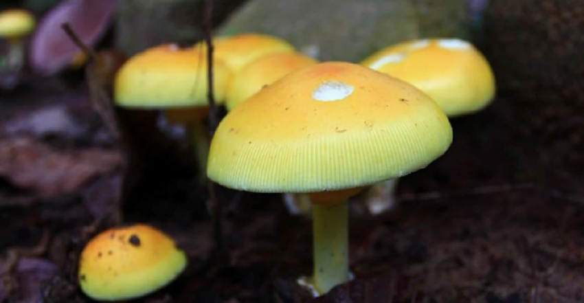
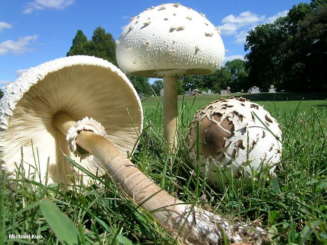
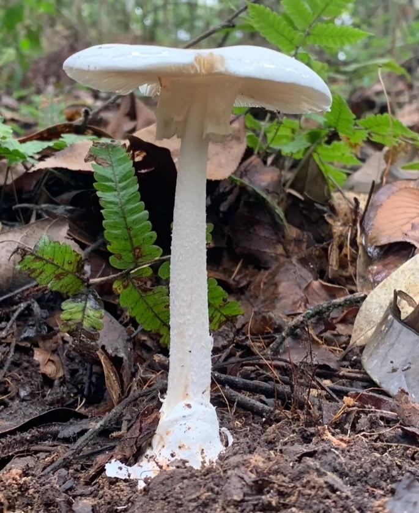
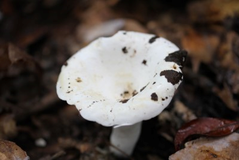
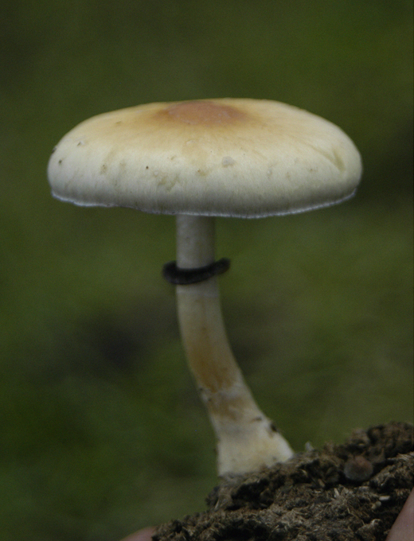
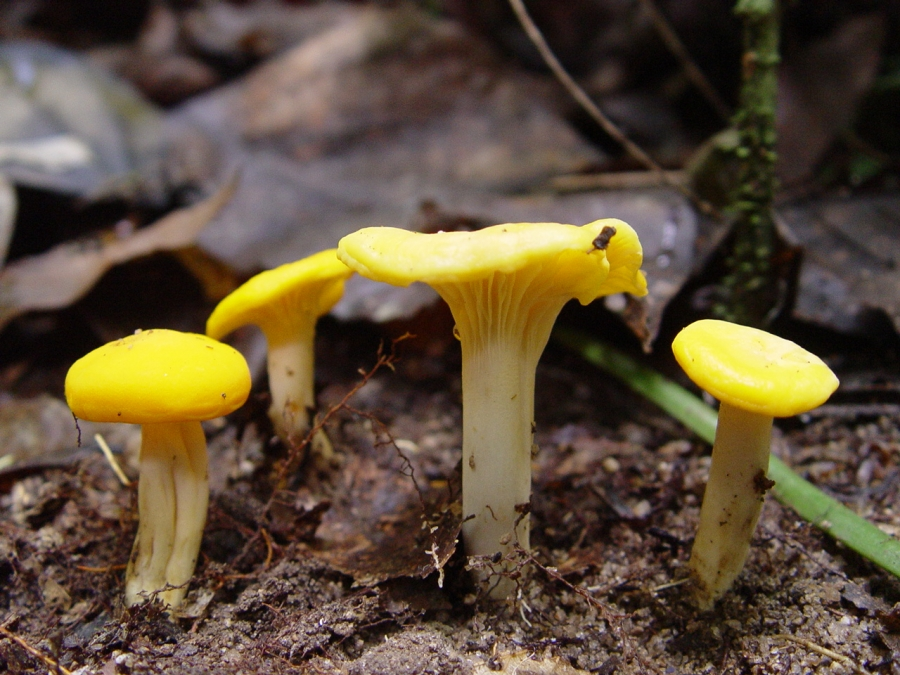
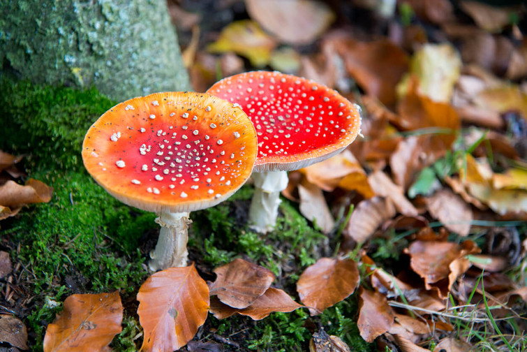
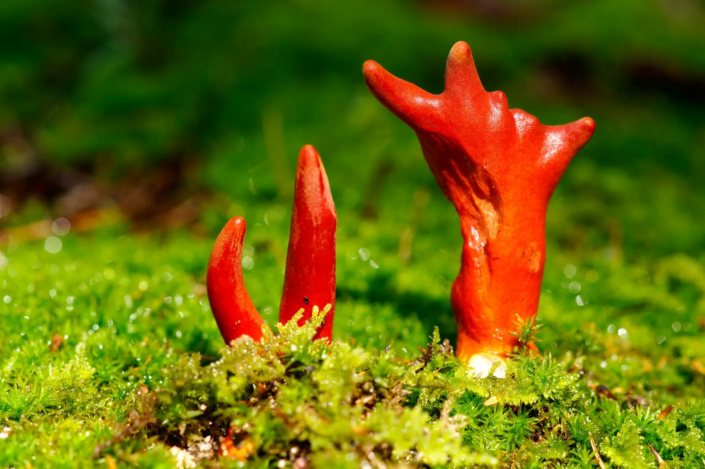

Poisonous Mushroom Pictures
The picture above is an example of a poisonous mushroom. That should not be eaten raw Some types should not be used for cooking. If found, do not mess with these mushrooms.








